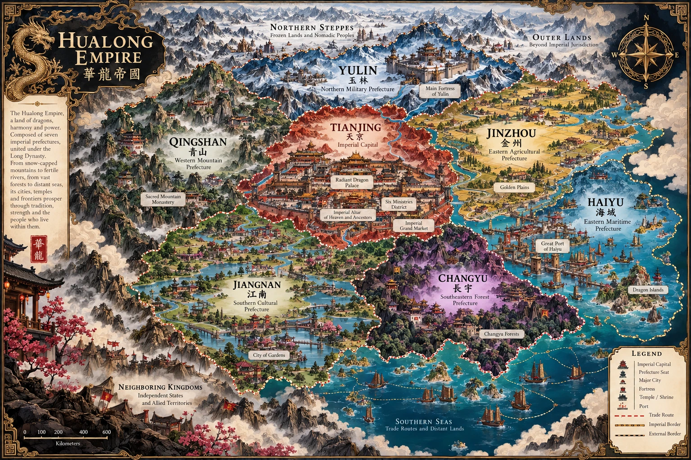

THE SEVEN PREFECTURES
An Empire of Legends
From frozen northern strongholds to flourishing southern waterways, discover the territories of Huálóng.

View full map ↗
THE HEART OF THE DYNASTY
Tiānjīng
The imperial capital and seat of the Lóng Dynasty, home to the Radiant Dragon Palace, the Six Ministries and the Grand Imperial Market.
THE DRAGON THRONE
The Imperial Court
Power, legacy and the people who shape the fate of the empire.
.webp)
People of Huálóng
LANDS OF THE EMPIRE
Explore the Prefectures
THE ORIGINAL LOREBOOK
The Imperial Archive
Explore all 106 original lorebook entries. Entries preserve the source text, including their narrative descriptions and character profiles.
FROM THE CREATOR
Behind the Empire
CachinhoDeCaramelo
Creator of the Huálóng Empire · Janitor AI
The world of Huálóng, its lore, characters, locations, and original worldbuilding were created entirely by CachinhoDeCaramelo. This illustrated encyclopedia celebrates that original creative universe.
Return to the beginning ↑